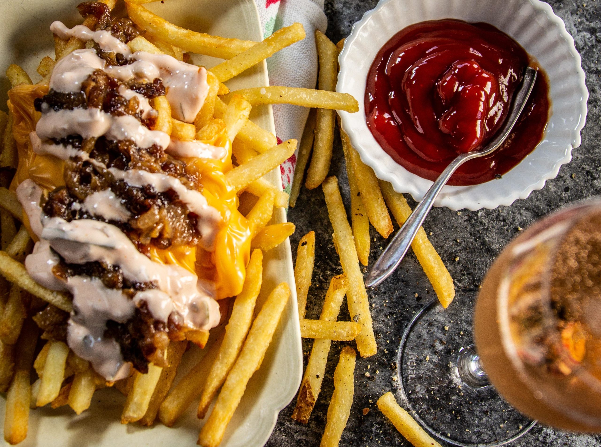
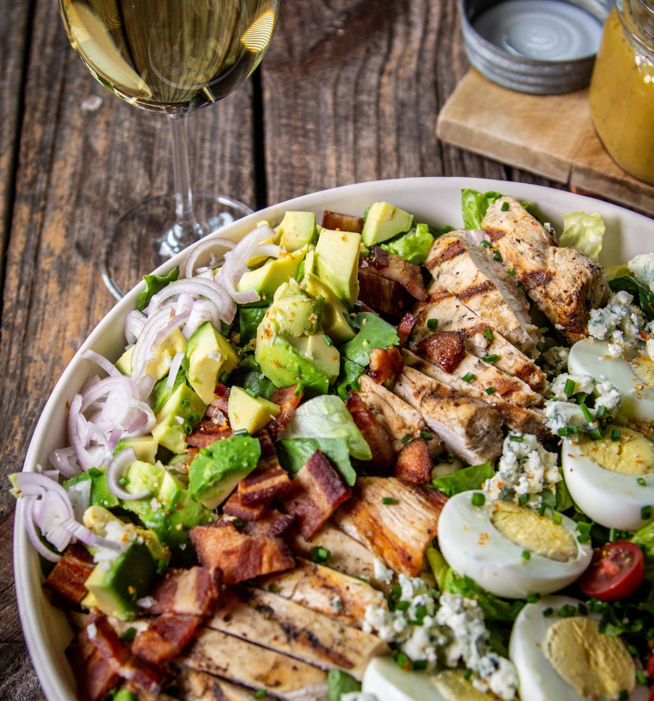

Welcome
“Welcome to the Golden State of California, where breathtaking coastlines, iconic landmarks, and vibrant cities come together in one remarkable place. Explore its diverse landscapes, from serene beaches to towering forests, and discover the culture, creativity, and stories that make California truly unforgettable.”
Tourist Spots
-
Yosemite National Park
Designated a World Heritage Site in 1984, Yosemite is known for its granite cliffs, waterfalls, clear streams, giant sequoia groves and biological diversity. Two Wild & Scenic Rivers, the Tuolumne and Merced rivers, begin in the park and flow west to the Central Valley.

-
Hollywood
Hollywood has long been a town where magic happens. Actors and actresses have rocketed to stardom. Major studios have produced some of the most celebrated motion pictures in cinematic history. Ornate movie palaces have been built, and more than a century later, some still stand. A 1923 real estate advertisement—the Hollywood Sign—has become one of California’s most famous landmarks.

-
Disneyland Park
Disneyland is a theme park at the Disneyland Resort in Anaheim, California, United States. It was the first theme park opened by the Walt Disney Company and the only one designed and constructed under the direct supervision of Walt Disney, and opened on July 17, 1955.

Famous Food
-
Los Angeles – Animal Fries
"Los Angeles animal fries" refers to In-N-Out Burger's Animal Style Fries, a popular menu item made with french fries topped with melted cheese, grilled onions, and their signature "animal style" sauce. The dish originated at the first In-N-Out location in the Los Angeles area and has become an iconic Southern California food staple.
 -
Hollywood – Cobb Salad
The Cobb Salad is a classic American dish that originated at the historic Hollywood Brown Derby restaurant in the 1930s. It is renowned for its specific set of finely chopped ingredients and an old-fashioned French dressing (which is more like a red wine vinaigrette).
 -
Gilroy – Garlic-Stuffed Sourdough Bread
About 20 miles inland from the coast, you’ll find Gilroy, the self-proclaimed Garlic Capital of the world. Gilroy is situated at the southernmost tip of the San Francisco Bay Area. It boasts a warm Mediterranean climate and early Italian settlers found that it was the ideal place to grow many familiar crops, including garlic.